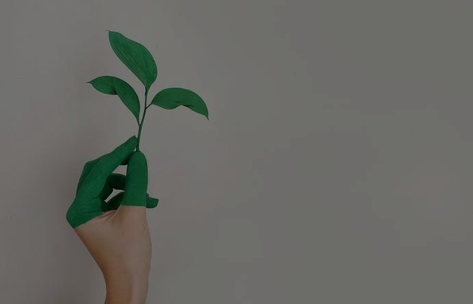
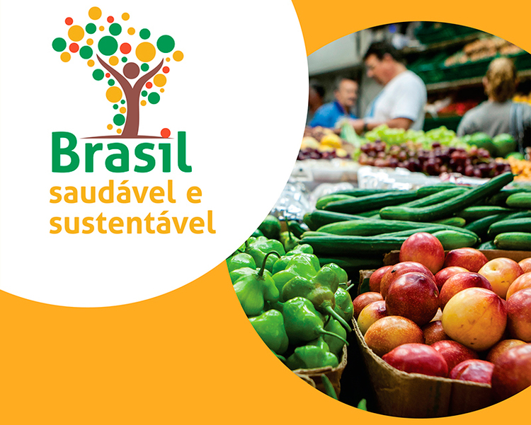
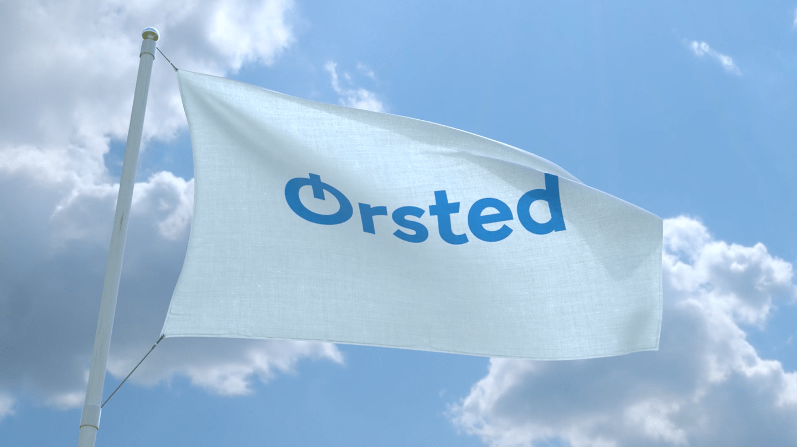
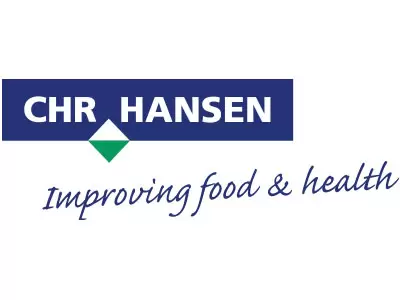
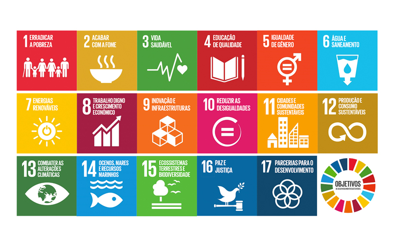

É utilizar e cuidar do que o mundo nos oferece para que não falte nada ao próximo, formando assim uma cadeia solidária que busca preservar da melhor maneira possível o meio ambiente
Desenvolvimento Sustentável
É o desenvolvimento capaz de suprir as necessidades da geração atual, sem comprometer a capacidade de atender as necessidades das futuras gerações

Agenda de 2030
Um plano de ação para as pessoas, para o planeta e para a prosperidade, a busca para fortalecer a paz universal com mais liberdade.
A sustentabilidade pode se resumir na atitude de reconhecer os próprios consumos excessivos e assim tomar decisões que diminuam esses exageros, algumas ações que podem ser tomadas são: mudanças no estilo de vida, reduzir o consumo de produtos não renováveis ou iniciar ações de reciclagem. Uma característica da sustentabilidade é o reconhecimento de limites, característica que surgiu da discussão a respeito da forma como a humanidade vem explorando e usando os recursos naturais, pensando em alternativas de preservá-lo evitando que esses recursos se esgotem na natureza.
A sustentabilidade é sustentada por meio de três dimensões que mantêm um equilíbrio harmonioso entre a esfera social, ambiental e econômica. Esse tripé representa uma tendência das empresas que passaram a se comprometer com a sustentabilidade. As principais características das três dimensões são:
Sustentabilidade ambiental: se refere à preservação do meio ambiente de maneira que a sociedade encontre o equilíbrio entre o suprimento de necessidades e o uso racional dos recursos naturais, sem prejudicar a natureza.
Sustentabilidade social: se refere à participação da população no que diz respeito ao desenvolvimento social por meio do desenvolvimento de propostas que tenham o objetivo de bem-estar e igualdade de todos para a preservação do meio ambiente.
Sustentabilidade econômica: se refere ao modo de desenvolvimento econômico que tem como objetivo à exploração dos recursos naturais de maneira sustentável, sem prejudicar as necessidades da geração futura.
A sustentabilidade está ligada sobre o que se trata o desenvolvimento sustentável.
O termo “desenvolvimento sustentável” surgiu em 1987 no relatório desenvolvido pela Comissão Mundial sobre o Meio Ambiente e o Desenvolvimento, conhecido como Relatório de Brundtland ou Nosso Futuro Comum, citado por Gro Harlem Brundtland. De acordo com o relatório, para que o desenvolvimento sustentável seja alcançado, é preciso primeiramente atender às necessidades básicas da sociedade.
O desenvolvimento sustentável se refere ao desenvolvimento socioeconômico, político e cultural ligado com a preservação do meio ambiente. Para assim, práticas capitalistas estarem em equilíbrio com a sustentabilidade, com o objetivo de avanços no campo social e econômico sem prejudicar a natureza. Ele é a garantia do suprimento das necessidades da geração futura por meio da conservação dos recursos naturais. O desenvolvimento sustentável é muito comentado, visto que houve um despertar de consciência da sociedade para a ideia de que os recursos naturais não são infinitos. Contudo, vale a pena dizer que o conceito de desenvolvimento sustentável é bastante criticado. Muitos acreditam que não tem como desenvolver a economia sem haver prejuízos ao meio ambiente, assim, a ideia de promover a sustentabilidade seria frustrada, visto que o desenvolvimento socioeconômico depende da exploração cada vez maior dos recursos naturais conforme haja aumento da população e aumento do consumo.
IMPORTÂNCIA DA SUSTENTABILIDADE
Cada dia mais o desenvolvimento sustentável se torna necessário, visto
que ele é a capacidade de manter os recursos naturais do planeta, os recursos
estão se tornando escassos à medida que o ser humano os utiliza. A
sustentabilidade é importante para que se possa manter a qualidade de vida
equilibrada com o que a natureza pode oferecer. Caso contrário, o uso
irracional pode levar à extinção desses recursos naturais e trazer grandes
problemas para as futuras gerações.
O controle e a conscientização sobre o consumo exagerado, uma
distribuição igualitária de auxílio e capital às classes sociais e países
subdesenvolvidos, bem como a reciclagem/reuso de materiais, são exemplos
claros de como a sustentabilidade tende a agir no dia a dia, tendo em vista a
melhora na qualidade de vida do ser humano e o crescimento econômico sem
agredir o meio-ambiente. As mudanças quantitativas e qualitativas nos
ambientes social, econômico e político são inversamente proporcionais entre si
e com a natureza. Alguns países, por exemplo, não aceitam os termos
internacionais de sustentabilidade, o que é, infelizmente, uma realidade que
trará um futuro incerto.
Alerte-se que, para um desenvolvimento sustentável assertivo, é
necessário conscientização da população, além de união das unidades
governamentais em escala mundial, gerando benefícios para quem pratica atos
sustentáveis e leis sobre indústrias e suas produções e descarte de resíduos e,
não menos importante, a colaboração da sociedade como um todo, pois não
adianta apenas saber a teoria, sendo que na prática o desenvolvimento não é
aplicado e acaba sendo invalidado. Resumindo, a importância da
sustentabilidade é: ser justo com o planeta para que ele seja justo com você.
Segunda a Juíza Oríana Piske, verifica-se que se deve primar para se crescer
economicamente, fazendo do avanço tecnológico, e de todas as suas características, um
instrumento de preservação ambiental, o que não é difícil, basta boa vontade e
comprometimento de todos.
É preciso considerar que, se antes a humanidade tinha uma visão apenas utilitarista dos
recursos naturais, numa limitada e precária perspectiva, hoje temos a percepção da magnitude
das suas dimensões, passando para um necessário humanismo ambiental. É importante
compreender que o homem faz parte da natureza e não ao contrário. Portanto, cabe a
indivíduos, empresas e governos desenvolverem uma cultura voltada para: o respeito à vida
em todas as suas formas; a gestão dos recursos naturais de forma sustentável; as tradições,
valores éticos e instituições que preservem os ecossistemas; a proteção da integridade dos
sistemas ecológicos; a manutenção da biodiversidade; e a recuperação dos ambientes
degradados.”
Sustentabilidade Econômica
A Sustentabilidade Econômica traz várias vantagens para nós. Um
exemplo de vantagem é a reciclagem de materiais, visto que ao invés de gastar
muito comprando mais material, reusar o que restou, ou abrir um programa de
reciclagem na empresa, evitará gastos desnecessários e a criação de resíduos
que seriam descartados depois. Isso também acaba influenciando na imagem
da empresa, que ao ter uma visão ambiental, acaba por chamar mais clientes,
gerando maior interesse nos produtos que ela tem a oferecer.
A Sustentabilidade acaba sendo um belo ajudante para todos âmbitos,
oferecendo alternativas cabíveis que auxiliam, sem agredir, tudo e todos ao seu
redor. Uma economia governamental sustentável que distribui auxílio mais
igualitário às classes sociais de seu país, por exemplo, acaba gerando menos
miséria e um movimento maior de capital, podendo desenvolver o país ainda mais.
Agora que você já sabe o que é sustentabilidade econômica aqui vai alguns exemplos de
práticas economicamente sustentáveis:
Comprar produtos de empresas Sustentáveis:
Comprar de empresas que adotam um estilo sustentável, além de uma ajuda para o meio
ambiente é também uma ajuda para que essas empresas continuem existindo.
Reciclagem ou Reaproveitar:
Uma boa prática economicamente sustentável e reutiliza, consertar, adaptar ou reciclar
materiais usados e usar produtos que causam menor impacto ambiental, como copos de papel ou por exemplo a
lâmpada de led, são bons exemplos de como economizar e ajudar o meio ambiente.
Comprar do comerciante local:
Além de ajudar um comércio local de sua região, comprar do pequeno pode ser às vezes até
mais barato que comprar em grandes redes de supermercado.
Além disso, você diminui a cadeia produtiva, fazendo com que o lucro seja bem dividido entre
todos os comerciantes, e reduz a necessidade de longos fretes, ajudando a limitar a emissão
de poluentes.
Economia de Recursos:
Atitudes como a de economizar energia e água são bons exemplos. Tomar banho rápido,
desligar as luzes dos locais que ninguém está, desligar aparelhos eletrônicos que ninguém está
usando. Além de economizar na conta de água e luz ajuda o meio ambiente.
Além desses, temos outros exemplos também de ações sustentáveis, porém de empresas e governos:
Programa Nacional de Crescimento Verde

Atualmente muitos governos e muitas empresas também têm se conscientizado sobre
a importância da sustentabilidade, assim, já existem muitos exemplos de ações
sustentáveis no Brasil e no mundo.
Um exemplo disso é o Programa Nacional de Crescimento Verde, que foi lançado pelo
governo federal no final de outubro de 2021, com a intenção de apresentar na 26º
Conferência das Nações Unidas sobre as Mudanças Climáticas (COP26) uma estrutura
que o Brasil pretende seguir nos próximos anos.
“O Governo Federal reconhece um desafio, o de desfazer a ideia de que o desenvolvimento da agenda ambiental possui
um caráter meramente punitivo, que somente onera as ações propostas. Por isso, em
outra direção, vamos incentivar, apoiar, inovar projetos verdes para que promovam
empreendedorismo, inovação sustentável, mostrando que o futuro verde está aqui, no
Brasil”, falou o ministro do Meio Ambiente, Joaquim Pereira Leite.
Orsted A/S

Orsted A/S é a 7ª empresa mais sustentável do mundo atualmente. A empresa
dinamarquesa Orsted A/S tem seu ramo principal na produção de energia. Não apenas
isso, trata-se da energia mais sustentável do mundo! Para alcançar a posição de uma
das empresas mais sustentáveis do mundo, a Orsted investiu todas as suas forças na
produção de energia renovável como a energia eólica.
Seu pontapé para a posição que
se tem hoje em dia se deu com a redução progressiva da emissão de carbono na sua
produção. Até agora essa sua emissão já foi reduzida em 67% apenas na última
década. Ao que parece, a instituição caminha a todo vapor para o cumprimento de sua
meta que é de produção de 95% de energia verde até 2023.
Renner
A rede Renner já até esteve na lista de mais sustentáveis do mundo, a rede de lojas de
departamento atua em todo o Brasil, as Lojas Renner inovam nas práticas de
gerenciamento do consumo de água, com instalação de cisternas que reduzem o
consumo em, aproximadamente, 55%.
Assim, mais de 100, de 528 lojas, já funcionam
com a adoção de práticas sustentáveis no consumo de água. No ano de 2018, a rede
também lançou uma coleção com peças feitas a partir de fios reutilizados de sobras de
tecidos, diminuindo o consumo de água em 44%. Em 2019, o monitoramento do
consumo foi feito de maneira mais rigorosa, a fim de reduzir o consumo cada vez mais.
Chr. Hansen Holding A/S

Chr. Hansen Holding A/S é a segunda empresa mais sustentável do mundo. A empresa
se destaca como desenvolvedora e produtora de enzimas, probióticos e corantes
naturais utilizados na produção de uma grande variedade de alimentos.
O segundo
lugar, ocupado novamente por uma empresa dinamarquesa, traduz os esforços da
instituição em alcançar os objetivos estipulados pela Organização das Nações Unidas
(ONU). Sua principal contribuição foi a partir do mapeamento de toda a sua produção e
adaptação para o atendimento das diretrizes. Esses direcionamentos fazem assim, um
apontamento para uma melhoria constante da alimentação humana e animal.
Sustentabilidade empresarial:
Sustentabilidade empresarial são ações e políticas sustentáveis (economicamente, socialmente
e ambientalmente) adotadas por uma empresa ao longo da sua existência, desenvolvimento e
produção de suas mercadorias ou serviços.
De acordo com o coordenador do Programa Produção e Consumo Sustentáveis do Centro de
Estudos em Sustentabilidade da Fundação Getúlio Vargas, Aron Belinky, a sustentabilidade
empresarial e a atenção que uma empresa dá a possíveis impactos ao meio ambiente podem
causar.
Hoje em dia as empresas apresentam programas de sustentabilidade com o intuito de diminuir
os impactos ambientais e conscientizar os seus funcionários para que não haja nenhum tipo de
prejuízo econômico, nem risco à saúde da população dos próprios funcionários.
Sustentabilidade econômica nos governos:
Os governos têm importância nas práticas economicamente sustentáveis, pois eles são os
responsáveis por promover as campanhas de conscientização da população e alinhar a
legislação a essas medidas.
Segundo detalha o site do Ministério do Meio Ambiente, é vital que as autoridades se
engajem em iniciativas de produção e consumo sustentáveis (PCS).
Elas podem ser descritas como:
“Processos de produção, serviços e consumo que priorizam a eficiência na utilização de
insumos e recursos, a redução de desperdício, a minimização de riscos à saúde e ao bem-estar
humanos, entre outras medidas de qualidade no gerenciamento dos recursos naturais e
humanos, gerando com isso efeitos econômicos e sociais positivos, além de proteger o meio
ambiente para todos.”
Os governos também precisam deixar a legislação atualizada para que as organizações
busquem trabalhar de forma sustentável e se for necessário cobrar e aplicar sanções às
empresas que estão ferindo o meio ambiente e prejudicando a população.
O governo precisa incentivar o aumento da diversidade na matriz energética, dando
preferência a fontes de energia sustentável. Por exemplo, energia solar e eólica.
Produtos verdes ou ecologicamente corretos feitos através de processos com baixo
impacto ambiental.
Economia circular, prolongando a vida útil dos insumos por meio do
reaproveitamento, transformação e reciclagem
Bioeconomia, um conceito que engloba uma gama de processos e produtos baseados
em recursos biológicos renováveis, como os biocombustíveis
Reduza a quantidade de resíduos gerados, comece com uma economia circular e
realize formatos de consumo sustentáveis
A destinação adequada de rejeitos e resíduos só é feita ao final da vida útil desses
materiais.
Desenvolvimento Sustentável
A ideia de desenvolvimento econômico é um simples mito, anunciou Celso Furtado
em 1974. Graças a ela, é possível desviar a atenção da tarefa fundamental de reconhecer as
necessidades básicas do coletivo e as possibilidades abertas pelo progresso científico para
os humanos, a fim de focalizá-los em outros objetivos abstratos. "Como negar que essa
ideia teve um grande papel ao mobilizar os povos marginalizados e levá-los a aceitar
grandes sacrifícios, legitimando a destruição de antigas formas culturais, explicando e
fazendo entender a necessidade de destruir o meio ambiente material, para intensificar a
produção? Defesa Formal Dependente do Caráter Predatório do Sistema?"
principal função do mito é guiar. A construção do que o grande economista Joseph Alois
Schumpeter (1883-1950) chamou de visão dos processos sociais, sem a qual o trabalho analítico
não teria sentido. Como ponto de vista pré-analítico, a mitologia serve como um farol que ilumina o
campo de percepção do cientista social, dando-lhe clareza em algumas questões e ignorância em
outras. Os padrões de consumo dos poucos humanos que vivem atualmente em países altamente
industrializados podem ser aceitáveis para populações grandes e em rápido crescimento que
formam as franjas.
Acima de tudo, a ideia de desenvolvimento está no centro da visão de mundo
predominante de nosso tempo. Baseia-se num processo de invenção cultural que nos
permite ver as pessoas como agentes de mudança no mundo. É o que Furtado chamou
mais tarde na introdução da terceira edição revisada de uma de suas obras-primas:
"Introdução ao Desenvolvimento". Os seres humanos interagem com seu ambiente em
um esforço para realizar seu potencial.
O gênio inventivo do homem tem sido usado na criação tecnológica nos últimos
200 anos, o que explica sua extraordinária capacidade de escala. É por causa desse
quadro histórico que devemos confinar a teoria do desenvolvimento à lógica dos meios,
que se confunde facilmente com a explicação do sistema produtivo surgido na
civilização industrial. No entanto, o desenvolvimento deve ser entendido como o
processo de transformação da sociedade não apenas em meios, mas também em
fins.(Furtado, 2000:8).
Quando se admite que é errado atribuir desenvolvimento ao aumento da renda
per capita, é comum pensar que logo surge a ideia de que o desafio fundamental será
o da distribuição de renda. Dito isso, o desenvolvimento pode ser facilmente definido
combinando crescimento com distribuição de renda. Infelizmente, essa questão não é
tão simples, e a melhor maneira de colocá-la é revisar brevemente o debate científico
sobre o assunto.
Quando se admite que é errado atribuir desenvolvimento ao aumento da renda
per capita, é comum pensar que logo surge a ideia de que o desafio fundamental será
o da distribuição de renda. Dito isso, o desenvolvimento pode ser facilmente definido
combinando crescimento com distribuição de renda. Infelizmente, essa questão não é
tão simples, e a melhor maneira de colocá-la é revisar brevemente o debate científico
sobre o assunto. A primeira contribuição significativa sobre essa relação surgiu em
célebre conferência presidencial proferida por Simon Kuznets (1901-1985) ao
congresso da associação dos economistas americanos de 1954, e publicada no ano
seguinte na American Economic Review. Bem mais tarde, em 1971, ele recebeu o
Prêmio Nobel, o que certamente ajudou muito na aceitação e difusão daquilo que ficou
conhecido como “curva de Kuznets”, ou “curva do ‘U’ invertido”, sobre a relação entre
crescimento e distribuição. invertido” ter se apoiado em base empírica tão modesta, ela
foi transmitida a várias 5 gerações de economistas como se fosse uma lei tão séria
quanto a da gravidade. Talvez devido a razões políticas e ideológicas que fizeram as
pessoas se apegar a essa ideia, mas também porque quase todos os testes feitos para
casos isolados pareciam confirmar a hipótese de Kuznets.
Quando o Banco Mundial terminou a montagem de uma base de dados
envolvendo 108 economias nacionais durante quatro décadas. Essencialmente porque
mostrou a inexistência de um único padrão histórico de evolução da distribuição de
renda. A partir da divulgação dessa base de dados nas páginas da The World Bank
Economic Review pelos pesquisadores Klaus Deininger & Lyn Squire (1996), o velho
consenso apoiado na hipótese de Kuznets parece estar sendo substituído por outro: de
que a estrutura da distribuição de renda é extremamente persistente, seja qual for o
crescimento econômico. Isto é, que não resta nada a fazer para atenuar a
concentração de renda, independente do que se possa fazer pelo crescimento. Desde
a Segunda Guerra Mundial, o crescimento variou muito entre os países, ao passo que
a distribuição de renda quase não mudou em termos comparativos. Há modelos que
sugerem, por exemplo, que o crescimento impulsionado por um determinado setor da
economia só pode ser durável se os benefícios do surto inicial forem distribuídos de
maneira suficientemente homogênea para que permita a expansão e o aprofundamento
dos mercados. Tanto mais favorável ao crescimento seria o perfil da demanda quanto
menos desigual fosse a distribuição de renda.
Ele começou perguntando se distribuições de renda e de riqueza seriam mesmo temas
centrais para as questões de justiça e equidade nos países em desenvolvimento. E
ilustrou essa pergunta com uma comparação entre a China e a Índia. Em 1997, os 10%
mais pobres da China recebiam apenas 2,2% da renda, enquanto na Índia sua parte
era dois terços maior: 3,7%. No extremo oposto, na China, os 10% mais ricos recebiam
30,9% da renda, enquanto na Índia só lhes cabia 28,4%. Ou seja, haveria mais
equidade na Índia do que na China se avaliada pela distribuição de renda. Todavia,
quase metade da população adulta da Índia continuava analfabeta, enquanto na China
não chegava a um quinto. Pior, entre as mulheres o analfabetismo atingia 62% na Índia
e 27% na China. É claro que a Índia tinha muito mais habitantes com educação
superior, mas isso só realçava a maior desigualdade das oportunidades educacionais
na Índia quando comparada à China. O contraste entre os dois países era ainda mais
evidente na área da saúde. Sofriam de subnutrição 63% das crianças indianas de
menos de 5 anos, contra 17% das chinesas. E a taxa de mortalidade infantil era
exatamente o dobro na Índia: 68 por mil contra 34 na China. Em síntese: o papel da
renda e da riqueza – ainda que seja importantíssimo – tem de ser integrado a um
quadro mais amplo e completo de êxito e privação. A pobreza deve ser vista como uma
privação de capacidades básicas, e não apenas como baixa renda.
Relatório Brundtland o "Nosso Futuro Comum"
O Relatório Brundtland, também conhecido como "Nosso Futuro Comum", foi escrito
durante a Comissão Mundial sobre Meio Ambiente e Desenvolvimento em 1987.
Coordenado pela primeira-ministra norueguesa Gro Halem Brundtland, aponta para as
diversas questões sociais e ambientais que a sociedade enfrenta, além de propor possíveis
soluções – ainda que nada simples – para a falta de sustentabilidade e igualdade no mundo.
No entanto, exemplos claros de funcionamento social e críticas à governos que não
distribuem ajuda às classes mais baixas são os mais comuns no relatório, apesar de neutros e
amplamente aceitos pelos países. Ele também diz que a definição de desenvolvimento
sustentável, embora semelhante, ainda é variável e continuará a evoluir. Um consenso sobre
essa definição é necessário porque podemos atuar com mais confiança em determinados
temas – sejam eles sociais, ambientais ou econômicos.
Em vez de culpar diretamente a indústria pelo status quo da natureza, ele diz que a pobreza
nos países subdesenvolvidos e o consumismo crescente nos países desenvolvidos
contribuem indiretamente para essas condições, porque o desenvolvimento não é igual para
todos. Para melhorar as condições, são necessárias políticas de limitação de produção e
conscientização, pois muitos materiais são raramente utilizados, deixando grandes
quantidades de resíduos, descartados de forma errada, prejudicando o meio ambiente e
prejudicando indiretamente os pobres.
A manutenção de níveis populacionais proporcionais
ao nível de produção de recursos necessários para sustentar a vida básica é uma das
maneiras de alcançar uma sustentabilidade mais confiante, à medida que as sociedades se
desenvolvem sob condições de vida razoáveis que podem ser facilmente melhoradas no
futuro. A pobreza é o resultado dessa distribuição desigual de recursos, e os recursos
precisam ser tratados com cuidado, pois essa má distribuição pode levar a uma pior
distribuição para as gerações futuras, pois os recursos do planeta são limitados e/ou
escassos.
Gro Brundtland é extremamente importante para o mundo e, após a comissão, uma visão
mais ampla do espectro ambiental começou a surgir, pois as mudanças climáticas e o
desmatamento se tornaram temas claros, além das diferenças entre as classes
socioeconômicas e da escassez de recursos futuros. Hoje, as políticas auxiliam o
desenvolvimento trazendo alguns benefícios para as empresas que praticam um
comportamento sustentável, facilitando a visualização de lugares ecologicamente e
economicamente saudáveis, mas, infelizmente, a desigualdade continua sendo um problema
a ser enfrentado.
Agenda de 2030
A Agenda 2030 é um compromisso global feito em 2015 por 193 países, incluindo o
Brasil. Foi uma decisão histórica dos países membros da ONU para unir forças em prol
de uma Agenda Mundial de Desenvolvimento Sustentável, que deve ser cumprida até o
ano de 2030. Foram eleitos 17 Objetivos de Desenvolvimento Sustentável (ODS),
relacionados com a obrigação dos direitos humanos e com objetivo de exaltar o
desenvolvimento sustentável em suas dimensões social, econômica, ambiental e
institucional. Os 17 objetivos são:

Uma série de iniciativas globais positivas já foram tomadas em diversas frentes, seja
nas diferentes agências das Nações Unidas, seja em movimentos da sociedade, seja
nos planos regionais ou nacionais, em diversos países. Entre elas, podemos citar:
Na agenda do clima, o Acordo de Paris (dezembro de 2015). Seu principal objetivo é
focar em combater o aumento da temperatura terrestre provocada pelo aquecimento
global e estimular a criação de mecanismos para diminuir o impacto das mudanças
climáticas e a substituição de fontes emissoras de gases do efeito estufa.
Na Estratégia Global para a Saúde das Mulheres, das Crianças e dos Adolescentes
(2016-2030).
Na questão das moradias e seus entornos, a Habitat III (Quito, 2016).
Além de muitas outras iniciativas complementares, em diversas áreas do
desenvolvimento sustentável. Porém, em contrapartida, enquanto surgem muitos
avanços, também há aqueles que não parecem fazer avanço, e infelizmente o Brasil
faz parte desse grupo. Um estudo feito em 2021 aponta que o Brasil não teve um
progresso satisfatório em nenhuma das 169 metas dos 17 objetivos de
desenvolvimento sustentável da Agenda 2030. Das 169 metas, 54,4% estão em
retrocesso, 16% estagnadas, 12,4% ameaçadas e 7,7% mostram progresso
insuficiente
Os dados constam no Relatório Luz 2021, feito por entidades da sociedade civil, que
mostra o grau de como anda a implementação dos objetivos do desenvolvimento
sustentável (ODS) no Brasil. O relatório foi lançado em uma audiência pública na
Comissão de Ciência e Tecnologia, Comunicação e Informática da Câmara dos
Deputados. Porém uma ação consideravelmente recente pode mudar um pouco isso, o
Programa Nacional de Crescimento Verde.